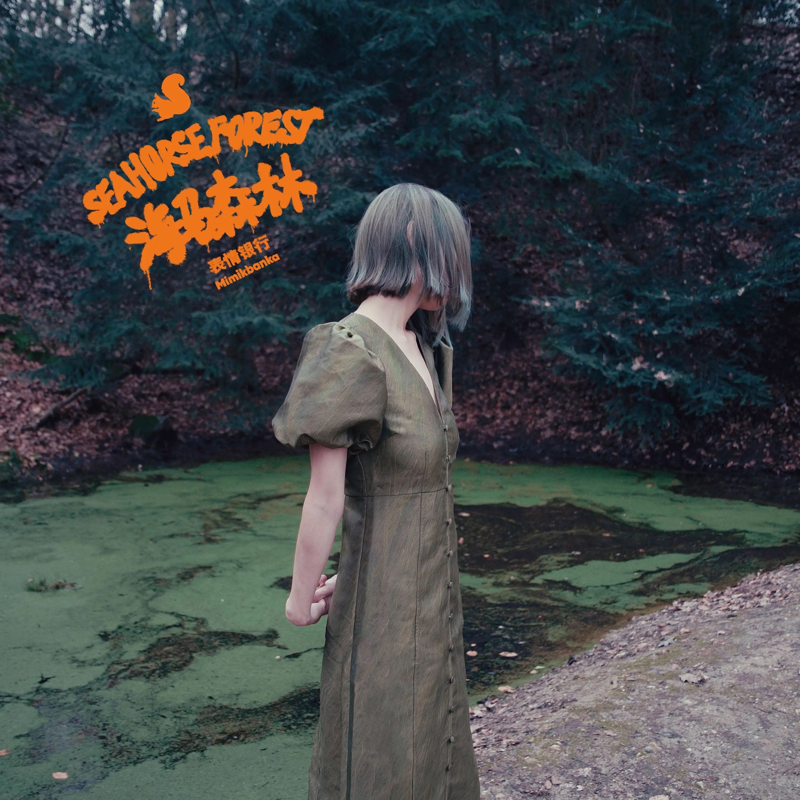

Album#39
海马森林 (SEAHORSE FOREST)


{kind=link}
最近又聴到《海马森林》這張専輯，依然很喜欢，喜欢它优美抓耳的旋律、好聴的人聲、丰富耐聴的編曲 (悠扬的大提琴和薩克斯)、有趣的歌詞，任何時候拿出來播放都不会聴厭。
关于《海马森林》:
2014 年我们在德国杜塞尔多夫录制了第一张专辑，录音棚不远处有一片大森林，我们时常会去逛逛。那里古老的巨树遮天蔽日，把脖子后仰到极限也望不到枝桠蔓延的边际。
2024 年我们在混音间隙重游这片大森林，听着啄木鸟嘴撞击树干的声音，闻着熟悉的苔藓味，脑中海马体种下的回忆也像森林般生长。这片森林一直在那里，每到做音乐的时候我们就会走进林中逡巡。我们时不时想起自己在起点时的样子，也时不时感慨自己怎么“变了这么多”或“一点也没变”。
这张专辑叫作「海马森林」，与其称之为精选辑，我们更愿意把它叫作回顾辑。专辑中收录的并不是所谓的“代表作”，而是我们自己觉得有必要新做一个版本，并且放在一起能形成完整专辑气质的八首歌曲。
表情银行向来不喜欢回头，这次的回头也是“向前回头”，我们不是想简单找几首自己的老歌新编一下，而是想用自己 2024 年的身心状态和制作能力赋予歌曲新鲜的质感，让它变成一张“新”专辑。「海马森林」整体呈现出 Chamber Pop 式的木质声响，编配不追求浓烈，而追求让人声与每种乐器都清晰可辨、充满情感，乐手们仿佛在一座森林木屋中围绕着你演奏。这些充满“人味”的编配想法有我们这些年在现场和排练室中逐渐堆砌起来的，也有专辑制作过程中与伙伴们一起 Jam 出来的。
熟悉的歌曲，全新的旅程。亲爱的听友们，欢迎走进我们的「海马森林」。
正如専輯介紹中寫的，這張専輯收录󠄃的是表情银行以前的歌，重新編曲，使其能形成完整专辑气质，「编配不追求浓烈，而追求让人声与每种乐器都清晰可辨、充满情感，乐手们仿佛在一座森林木屋中围绕着你演奏」，毫无疑問，他們做到了，専輯給人森林般的獨特气貭，而不是簡单的老歌新編，和最初的原曲有不一樣的感覚，聴完専輯也推薦将原曲找來聴聴。
表情银行是一支我很喜欢的樂隊，最早應該是在 总是点评乐夏的他们音乐水平如何? 表情银行新歌首演!丨HOPICO 认识他們的，很喜欢他們那張《嘿！岛（Black Island）》的 EP (Extended play) (强烈推薦一聴)，后面也去聴過他們兩场 live，如果他們有巡演推薦去聴聴。
TRACKLIST
蓝（2024ver.）
我看见银色的雾鼓满我的帆
微暗的光声声呼唤
我看见天边星星已不再遥远
灯火阑珊早已看不见
想问个问题
在你怀里的这片蓝色
是不是我的家
头顶无边的蓝色
脚下旋转的天空
耳边传来你的歌
我看见银色的雾鼓满我的帆
初生太阳亲吻你的脸
想问个问题
在你怀里的这片蓝色
是不是我的家
头顶无边的蓝色
脚下旋转的天空
耳边传来你的歌
头顶无边的蓝色
脚下旋转的天空
耳边传来你的歌
「银色的雾鼓满我的帆」喜欢這個意象。
鼓點給人一種扬帆出发的感覚。03:15 左右開始的器樂演奏很棒！人聲的啍唱、閃烁明亮的吉他、小军鼓般的行进鼓點（喜欢這種鼓點）、萦繞着的薩克斯，聴着很丰富，讓人享受，就像飄浮在夜空一般，身边是无尽的蓝。
安全降落（森林版）
在安全的地方降落欲望
在温柔的地方将胆怯埋葬
我的夜晚如晨光开始
我愿对着陌生人歌唱
我顺流而下遇见了你
沉溺在你眼睛的清泉里
每当我找到勇气
我们在拥抱中分离
可是我爱你
就像爱山谷里的风
可是我爱你
虽然你从不在我怀中停留
在安全的地方降落欲望
在温柔的地方将胆怯埋葬
我的夜晚如晨光开始
我愿对着陌生人歌唱
张开我永不疲倦的翅膀
在夜空中寻找光芒
而那些无谓伤感的想象
我学着把它们隐藏
好温柔的旋律，吉他的聲音像是轻轻抚摸出來的，薩克斯和大提琴也很温柔。
「在安全的地方降落欲望 / 在温柔的地方将胆怯埋葬」給人一種温柔安心的感覚，讓人可以放下防备和紧張，短暂地躲进歌聲里。
「我的夜晚如晨光开始」這句歌詞也很有趣。
「我愿对着陌生人歌唱」讓我想到一首喜欢的歌 ⸺ 脆莓的「广州」⸺ 其中有一段歌詞是這樣的：
不知道此刻我为什么会感到难过
是为这夜色还是过路人的沉默
我也曾问过
能为这世界带来什么
你却让我轻轻为你唱首歌
宇航员（2024ver.）
你是很聪明
也懂得取巧
凭机灵好运
也谱出风潮
夜晚浮起了你
你在无边无际的空中
一个疯子在摇摇欲坠
一个酒鬼在打听将来
不爱任何沉重的事
也许生命少些分量
你走过很多路
目的地不明不暗不详
夜晚浮起了你
你在无边无际的空中
一个疯子在摇摇欲坠
一个酒鬼在打听将来
宇航员哪
你的火箭
还有一根
羽毛
你的诗写了开头几行
你想要的和想忘记的
你向前时后退了吗
這首的旋律是跳動的，有點戏謔的感覚。
歌詞我很喜欢，也很有趣。「夜晚浮起了你」這個「浮」字用的真好。
1:25 左右，唱到「目的地不明不暗不详」，鼓點响起，仿佛真的浮起來出发了。
有一天，宇航員也會想要「安全降落」吧 :P
這首歌里火箭的意象還讓我想到了兩首歌，也推薦一聴：
- 火箭 by 叶喜儿
- 万户的 47 枚火箭 by White
静默的鸟（时空对话版）
Here comes a little silent bird
Standing on my window like a little blur
When the sun shines on my pale and withered face
When the cold dirty winter hasn't passed by
Here comes a little silent bird
Standing on my window like a little blur
Sing to me my little silent angel
Sing to me you're the miracle
Here comes a little silent bird
Standing on my window like a little blur
She's still quiet and look me into the eyes
Wash away my pain and burned my soul
Here comes a little silent bird
Standing on my window like a little blur
At last she goes with no goodbye
Left me beside window in the sunshine
At last she goes with no goodbye
Left me beside window in the sunshine
歌词大意
这里飞来了一只静默的鸟
站在我的窗前像一个小小的污点
当太阳晒在我苍白枯萎的脸上
当寒冷肮脏的冬日还没有过去
这里飞来了一只静默的鸟
站在我的窗前像一个小小的污点
请为我歌唱吧我亲爱的天使
请为我歌唱吧你就像一个奇迹
这里飞来了一只静默的鸟
站在我的窗前像一个小小的污点
她仍然保持着沉默并深深看进我的双眼
涤去我的痛苦燃烧我的灵魂
这里飞来了一只静默的鸟
站在我的窗前像一个小小的污点
最后她飞走了，没有说再见
留下我站在窗前，沐浴在阳光中
最后她飞走了，没有说再见
留下我站在窗前，沐浴在阳光中
這首有種在森林里的感覚，幽幽的，有點伤感。
薩克斯像凌乱的思緒，大提琴聲悠扬却又像是挣扎，仔细聴中間還有短促的鋼琴聲，像是不小心压在了琴鍵上，惊跑了停在窗口的 little silent bird。曲子最后还能聴到一些鳥鳴。
有趣的是，這首曲子是一段跨時空對話，翻看制作信息会看到：
词 : 2009 年的思雨
曲 : 2009 年的思雨
演唱 : 2014 年的思雨
和声 : 2024 年的思雨
编曲 : 表情银行 MimikBanka
吉他 : 2014 年的 Robin人友
钢琴 : 2014 年的思雨
萨克斯 : 张艺威
大提琴 : 陈顺顺
合成器 : 通通
铃鼓 : 通通
然后你来（2024ver.）
一开始只是一条
似是而非的线
然后你来
湖水涌来
翅膀洁白的你
思维闪烁的你
从你身体里长出
方形三角五角形
你说我朝三暮四啊
我说你天真无邪意
你说我朝三暮四啊
我说你天真无邪意
你从哪里进入我生命
是十月或清晨三点
语言变成明亮的灯芯
随着太阳旋转
随着群星旋转
随着太阳旋转
随着群星旋转
随着太阳旋转
随着群星旋转
編曲太棒了(尤其是鼓)！享受它吧。
「一开始只是一条 / 似是而非的线 / 然后你来」会讓我想到浪花。
喜欢這句「你说我朝三暮四啊 / 我说你天真无邪意」。
在有或没有的从前（2024ver.）
故事书的开头经常是 Once upon a time，但有一次我读到一本古老童话以 There was a time and no time 开头。海马森林中的从前到底是不是真实的从前？
⸺ 表情银行
好聴的器樂演奏，有點像 Cicada 的风格。
重生摇篮曲（feat.陈思江&艾迪娜）
太阳尚未升起
太阳升得更高
一个未完成的句子
就好像万物的起始
太阳正在下沉
太阳流入海平面下
色彩从她的身上飞走
她变得坚硬灰暗粗哑
记忆深层褶皱里的光亮
像那片阳光穿透过的叶子
一切都会变好吗
像你说过的那样
记忆深层褶皱里的光亮
像那片阳光穿透过的叶子
一切都会变好吗
像你说过的那样
今天是重生的日子
我愿把时间还给你
它是透明的
被阳光包裹住
有流水的纹路
这首歌其实写了很久，它本是一首纪念通通妈妈的歌谣。一切都会变好的，像你说过的那样。
⸺ 表情银行
緩慢的大提琴聲，像是緩緩升起又落下的太阳，「一切都会变好的，像你说过的那样」。
演唱的陈思江，是海朋森樂隊的主唱，海朋森的「成长小说」也可以聴聴。陈思江自己也有一些歌，例如「声音鞋子」，也不錯。
而艾迪娜是缺省樂隊的主唱，他們的「共同的土地」也很不錯。之前艾迪娜还出現在了 Hopico 的節目，Live at Revolution Hall 這張専輯就是她推薦的，節目里推薦的歌手 Bon Iver 我也很喜欢。
最后那只弓头鲸没有回头（2024ver.）
海潮轻轻拍
白日下潜
夜晚游弋
沉重啊轻盈
海床升起了
四季兴替
别后无迹
沉重阿轻盈
丢下对漂亮的谈论
鱼群从潮水里浮起
找寻一种集体失明
错误会带来新的目的
退而求其次的故事
沉没前看见了无际
波涛背后平复之虞
隐藏的最后陨落海底
不是孤独的
海只有一个
黑暗只有一种
我就在其中
不是孤独的
我就在其中
不是孤独的
我就在其中
这是《表情银行》同名专的第一首歌，是《海马森林》的最后一首歌。我们继续向前游，不要回头。
⸺ 表情银行
薩克斯太棒了！
前面旋律有點低沉，主要是吉他和大提琴，或許是出发的孤獨感；当唱到「不是孤獨的」，薩克斯进來了，似乎是下定决心向前走，一扫低沉的感覚，毅然决然地向大海深处游去。